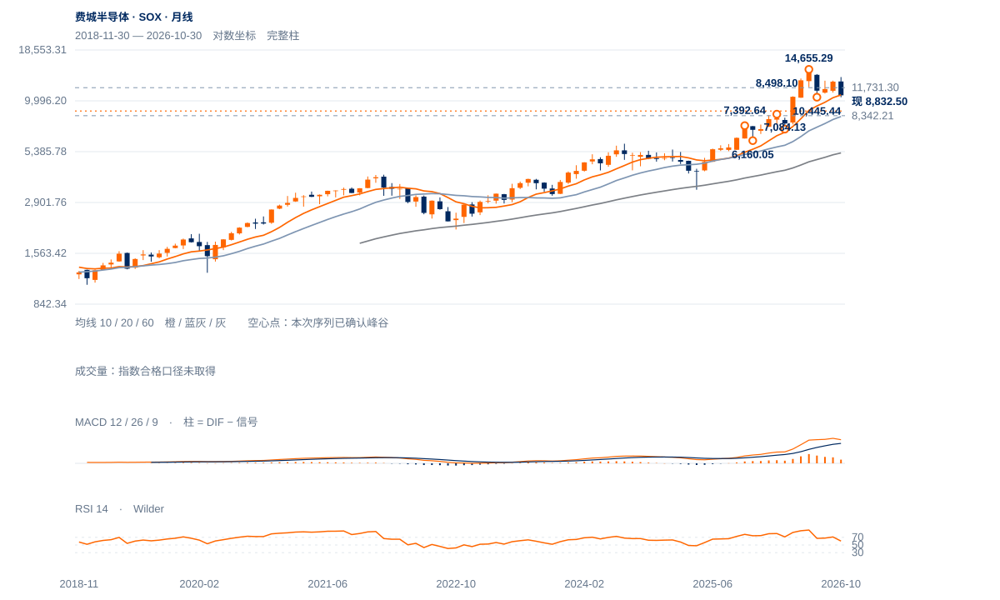

日收盘跌破，增加下降扩展风险
费城半导体 · 2026-11-24完整收盘
跳空修复失败，短线下行风险上升
8,832.50-7.88%
新窗口封闭与反向缺口
关键价位与改判条件
日收盘收回并保持，减轻原谷下压力
日收盘越过，封闭新下降窗口
窗口修复后，再观察更大旧谷
分期限展望
近期重新转弱，23日跳空修复已经失败。8997.39为首要恢复价，9374.83收复才封闭新下降窗口；8342.21失守将增加下行扩展风险。
未来2—6周撤销23日上升窗口保护，回到8997、9204下的受阻重建。24日反向窗口9375上沿恢复可否定新供应，10445及10787原两日仍在上；8342再失将增强下降扩展。
未来1—3个月仍受6月14655与10月13350较低高区及10445失守约束。新窗口修复仅一天便失败，增加中期下降中的反弹解释；更高周谷、原谷恢复和上层供应消化尚待重新建立。

长期背景
6月14655大高、10月13350较低高区与7月10445谷失守构成半年损伤。24日又失8997且封闭新上升窗口，短线修复失败与原中期下降一致，完整月级损伤尚待重建。 当前日收盘8,832.50与完整10月月线分开观察；11月尚未结束。
中期结构与新证据
完整周线已更新至11月20日：2026-08-17高12,770.71（2026-09-04确认）；2026-09-03低11,056.38（2026-09-18确认）；2026-10-06高13,349.96（2026-10-23确认）。最新一周与上次11月20日背景分别保存；25日国内与24日美股仅为本周进行中观察。24日收8832.50跌7.88%，已低于23日上升窗口下沿9204.42及8997.39原谷；日高9197.55又低于23日低9374.83，形成下沿9197.55、上沿9374.83的下降窗口。23日单日被两侧缺口隔离，原修复失败单列，不把失败改名算作事前做空成功。
主要反方
如果快速回8997并封闭9374.83反向窗口，失败下破可重建；当前近20日相对纳综落后14.18%，修复持续性偏弱。
波动与量能
RSI14 38.02；ATR14 655.56；相对量未取得合格口径